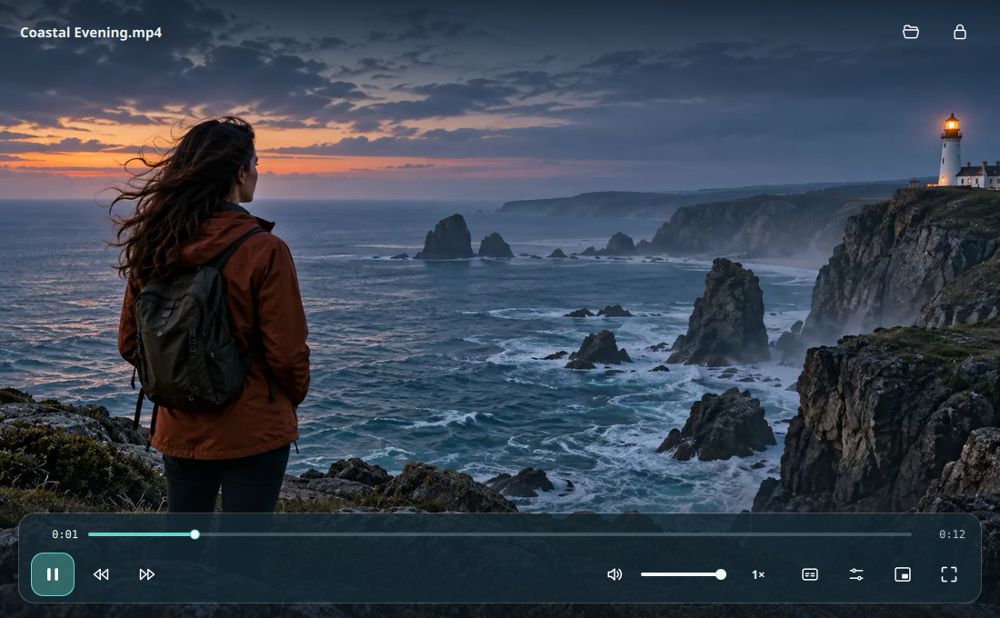
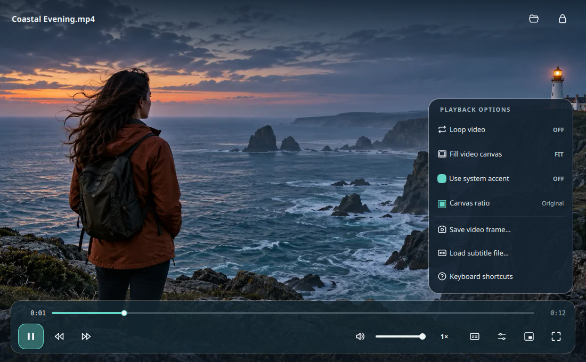
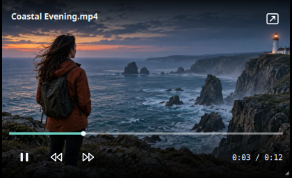

Controls on demand.
They disappear as playback begins.
Beautiful playback, built for Linux.


They disappear as playback begins.
Lock the interface to show only video.
Subtle feedback for play, pause, and seeking.
Keep watching in a compact window while you work.

Try a new canvas ratio without changing the file.
Your video stays untouched. Feature guide
curl -fsSLo /tmp/linuxplayer-install.sh \
https://github.com/teamkrope/linuxplayer/releases/latest/download/install.sh
bash /tmp/linuxplayer-install.shPlayback hides the controls automatically. Click the lock in the header or press H to keep them hidden. Move the pointer to reveal a temporary unlock button, or press H again.
LinuxPlayer uses the system's libmpv and FFmpeg libraries. Format support depends on the codecs available on your distribution.
Yes. Choose "Make default video player" on the opening screen or in More options. The app updates supported file associations for your user account after you click.
No. Ratios show how a video fits or crops inside a canvas during playback. Your original file stays unchanged.
Email contact@teamkrope.com, see the support guide or ask in GitHub Discussions.